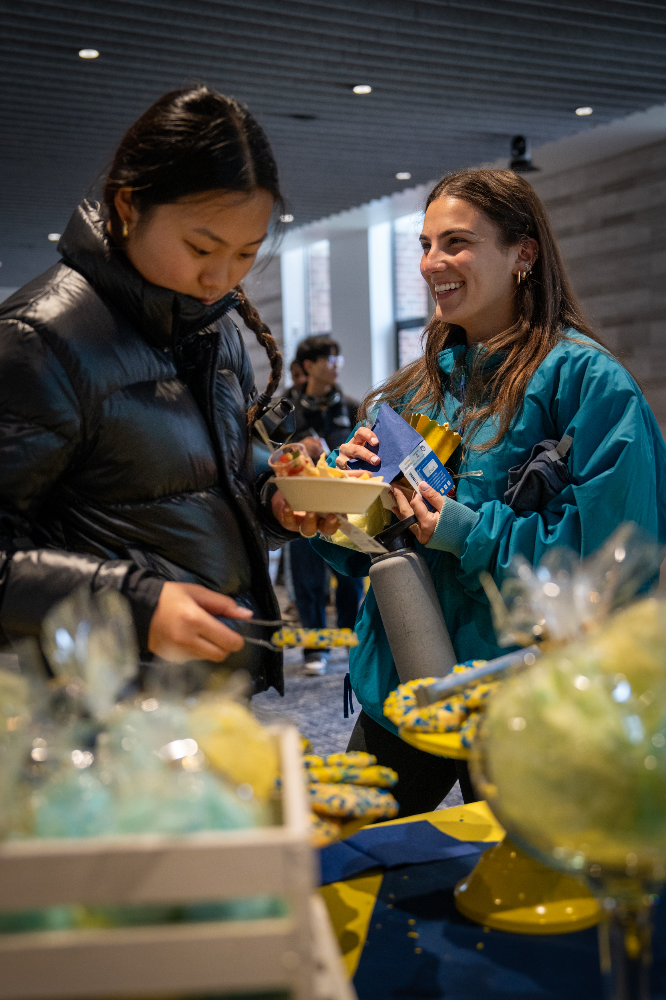

Our Mission
The Maize & Blue Cupboard is committed to enhancing student success at the University of Michigan by providing equitable access to healthy, nutritious food, essential resources, and support services. Our mission is to empower students to achieve academic success, maintain a healthy school-life balance, and find help during challenging times.

Make an Appointment Now
Shopping at the Maize & Blue Cupboard is by appointment only. To access our resources, please schedule your appointment here. This ensures all students can conveniently access the resources they need.
Who We Are
Food insecurity is a growing issue among college students and staff. The Maize & Blue Cupboard addresses this challenge with compassion and comprehensive support. We provide resources, education, and tools that enable students to make informed decisions and enhance their overall well-being—emphasizing the Michigan Difference.

Have questions? Read our FAQs for more information.
What We Provide
- Food: Fresh produce, dairy, meats, bread, frozen items, and shelf-stable foods.
- Kitchen & Cooking: Essential items such as pots, pans, dishes, utensils, cutting boards, and storage containers.
- Personal & Household: Hygiene products, cleaning supplies, trash bags, and school supplies.
- Support: Connections to campus experts like CAPS, Dean of Students, Financial Aid, and SNAP resources.
Donate
Want to make a difference? Donate to the Maize & Blue Cupboard and support our mission to fight food insecurity at U-M.
Location and Hours
The Maize & Blue Cupboard is located in the basement of Betsy Barbour Residence Hall. Enter via the Maynard entrance to ensure privacy for residents. Accessibility options, including ramps and elevators, are available upon request.
420 S State St, Ann Arbor, MI 48109
Phone: 734-936-2794
Hours of Operation
- Sunday: 2pm-6pm
- Monday - Thursday: 3pm-7pm
- Friday: 12pm-7pm
- Saturday: Closed